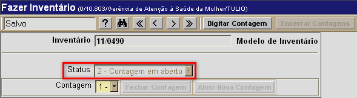

Fazer Inventário [
Voltar
]Utilize este formulário para realizar as contagens e conciliação de inventário.
Para acessá-lo, vá ao menu "Inventário"
na tela inicial e clique em "Fazer Inventário".
Após clicar no formulário, o sistema abrirá
a seguinte tela:
Selecione uma das duas opções abaixo para
ver o guia passo-a-passo:
Fazer inventário
Localizar e abrir registro de inventário existente
Fazer inventário
1º Passo: no campo "Inventário", informe o código do inventário que será realizado. Após informar o número do inventário no campo "Inventário", pressione a tecla "Enter" ou clique em qualquer parte da tela para que o registro do inventário em questão seja aberto. Se necessário, clique no botão  [Procurar]
na barra de botões para pesquisar e selecionar um determinado
inventário a partir de uma listagem contendo todos os inventários
cadastrados. Assim que localizar o inventário desejado, selecione-o com
um clique. [Procurar]
na barra de botões para pesquisar e selecionar um determinado
inventário a partir de uma listagem contendo todos os inventários
cadastrados. Assim que localizar o inventário desejado, selecione-o com
um clique.
Assim que o registro de inventário, as seguintes opções devem ser levadas em consideração: - Campo "Status". Este campo sinaliza o estágio atual do inventário e, assim, indica o que deve ser feito no momento. Os status existentes são:
Este status indica que o registro de inventário foi cadastrado, porém ainda não foi processado. Neste caso, o inventário ainda não pode ser realizado; Este
status indica que o inventário possui uma contagem em aberto (o campo
"Contagem" exibe o número da contagem correspondente). Neste caso, para
iniciar a contagem clique no botão  ; ; Indica que a contagem anterior foi encerrada (o campo "Contagem" exibe o número da contagem correspondente). Você pode decidir abrir nova contagem por meio do botão  ou encerrar as contagens com o botão ou encerrar as contagens com o botão  ; ;- Processo de contagens concluído
Neste
estágio do inventário, todas as contagens foram realizadas. É possível
visualizar, os relatórios de contagem, conciliar o inventário e efetuar
ajustes. Status que indica que o inventário em questão já foi conciliado e está encerrado.

- Campo "Contagem". Este campo exibe a contagem atual do relatório.
- Relatórios de Contagem de Inventário. Clique em um dos links para ter acesso aos seguintes relatórios:
- Mapa de Contagem;
- Relatório de Digitação Realizada;
- Relatório de Itens Não Digitados;
- Relatório de Divergência de Contagem.
- Relatórios Gerenciais de Inventário. Os seguintes relatórios estarão acessíveis após a conciliação do inventário:
- Relatório Físico-Contábil de Inventário (Diferenças);
- Relatório Físico-Contábil de Inventário (Total);
- Relatório de Demonstrativo de Inventário.
2° Passo: uma vez aberta a contagem, clique em para inserir os resultados da mesma. 3° Passo: insira o resultado das contagens no campo "Quantidade Contada". Se desejar, deposite no campo "Observações" informações adicionais sobre a contagem do item.
4° Passo: após inserir todos os dados da contagem, clique no botão  para salvá-los. Em seguida, clique no botão para salvá-los. Em seguida, clique no botão  [Voltar] para retornar à tela principal. [Voltar] para retornar à tela principal. 5° Passo: para concluir a contagem atual, clique no botão  . Assim que a contagem é fechada, o botão é habilitado para a criação de uma nova contagem. Se desejar concluir o processo de contagens, clique no botão . . Assim que a contagem é fechada, o botão é habilitado para a criação de uma nova contagem. Se desejar concluir o processo de contagens, clique no botão . Observação: a qualquer momento o usuário pode ter acesso aos relatórios de digitação de inventário, descritos no 1° passo. 6° Passo: clique no botão para atualizar os saldos dos produtos do estoque a partir do inventário.
Assim que o inventário é conciliado, os relatórios gerenciais de
inventário (descritos no 1° passo) são habilitados para o usuário.
Localizar e abrir registro de inventário existente
Para visualizar os detalhes de um inventário
já cadastrado, siga os passos abaixo.
1º Passo: para localizar o inventário que deseja
abrir, clique no botão da
barra de
botões.
Em
seguida, utilize os filtros da pesquisa para localizar mais facilmente o inventário que deseja localizar. Para mais informações sobre
outros recursos
e
funcionalidades da pesquisa, favor ver o manual Introdução
ao Sistema.
Assim que localizar o inventário em questão, selecione-o com um clique. Quando o inventário é selecionado, o seu
cadastro é aberto e são exibidas as informações atuais.
Ir
para o topo da
página |